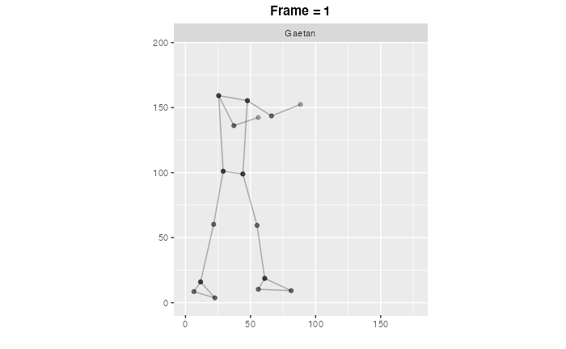
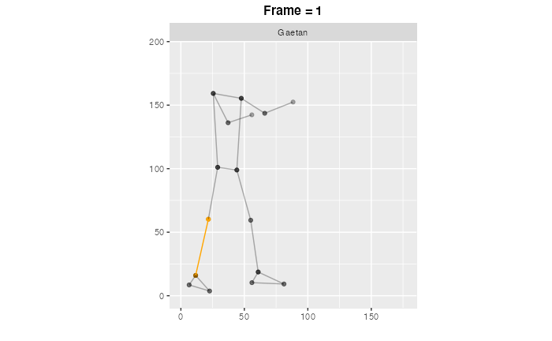
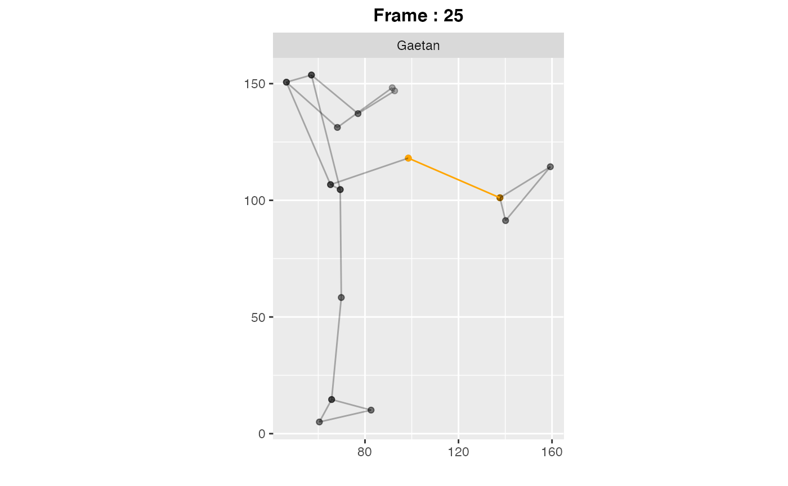

using-MocapMineR.RmdMocapMineR is an R package dedicated to the analysis of motion capture data. It was initially developed by Lou-Anne Guillotel and myself (Sébastien Lê) to analyze movements from blind Tae Kwon Do practitioners. The main idea, was to find a way to correct these practitioners automatically, based on graphical indicators. Actually, this package works for any kind of motion capture data. To use this package you will need two data sets. A first one, in which you store the coordinates of joints as a function of time, a second one in which you describe the structure of interest, i.e. the dependencies between the joints that define the segments of the structure.
skeleton function
library(MocapMineR)The human data set depicts the dependencies between the segments that compose the structure. It is constituted of three columns, a first one (segment) with the names of the segments, the two others with the names of the joints at the extremities of the segments (extr1 and extr2).
data(human)
head(human)
#> segment extr1 extr2
#> 1 forarm_r RIGHT_WRIST RIGHT_ELBOW
#> 2 humerus_r RIGHT_ELBOW RIGHT_SHOULDER
#> 3 flank_r RIGHT_SHOULDER RIGHT_HIP
#> 4 femur_r RIGHT_HIP RIGHT_KNEE
#> 5 tibia_r RIGHT_KNEE RIGHT_ANKLE
#> 6 upperfoot_r RIGHT_ANKLE RIGHT_FOOT_INDEXThen, the gaetan_apchagi data set contains the coordinates of the joints as a function of time. The first column is the moment when the information have been recorded. The second column is the joint that was measured. Columns 3 to 5 correspond to the dimensions that have been measured. Column 6 is the index of the frame. Column 7 is the number of frames per second and the last column is the name of the practitioner.
data(gaetan_apchagi)
head(gaetan_apchagi)
#> # A tibble: 6 × 8
#> time loc x y z frame fps name
#> <dbl> <chr> <dbl> <dbl> <dbl> <dbl> <dbl> <chr>
#> 1 0 RIGHT_SHOULDER 25.5 159. -0.292 0 30 Gaetan
#> 2 0 LEFT_SHOULDER 47.6 155. 0.292 0 30 Gaetan
#> 3 0 RIGHT_ELBOW 37.2 136. -0.528 0 30 Gaetan
#> 4 0 LEFT_ELBOW 66.1 144. 0.549 0 30 Gaetan
#> 5 0 RIGHT_WRIST 55.9 142. -0.679 0 30 Gaetan
#> 6 0 LEFT_WRIST 88.4 152. 0.601 0 30 GaetanThe skeleton function allows you to vizualize the movement you have recorded. The parameters num.joint, …, num.name depend on the gaetan_apchagi data set.
data(gaetan_apchagi)
data(human)
skeleton(joint=gaetan_apchagi, structure=human, num.joint=2,
num.frame=6, num.x=3, num.y=4, num.name=8)
#> nframes and fps adjusted to match transition
You may also want to highlight a particular segment or body part.
data(gaetan_apchagi)
data(human)
skeleton(joint=gaetan_apchagi, structure=human, num.joint=2,
num.frame=6, num.x=3, num.y=4, num.name=8,
body.part = "tibia_r",color.part = "orange")
#> nframes and fps adjusted to match transition
You can also want to represent a particular frame, and highlight a particular segment or body part.
data(gaetan_apchagi)
data(human)
skeleton(joint=gaetan_apchagi, structure= human, num.joint=2,num.frame=6,
num.x=3, num.y=4, num.name=8, body.part = "tibia_r",frame.index=25,
color.part = "orange")